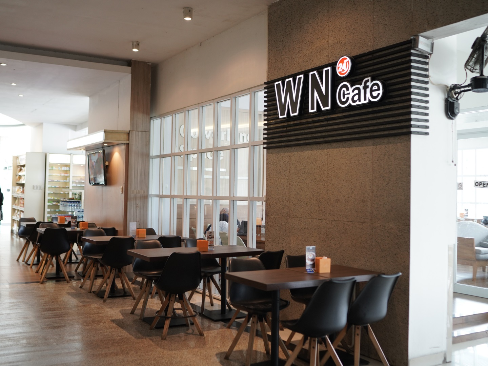

Nasi Goreng
Spesial WN, Ayam, Pete, Iga Sapi, Seafood, Hongkong, dan pilihan lainnya.

WN Cafe hadir 24 jam di samping lobi Wisata Niaga Hotel, dari breakfast buffet pagi hingga menu a la carte sepanjang hari.

Mulai hari dengan breakfast buffet all you can eat, lalu lanjutkan dengan pilihan a la carte Indonesia, Asia, Western, pizza, minuman, dan lainnya.
WN Cafe melayani beberapa pilihan menikmati menu sesuai kebutuhan tamu hotel maupun pengunjung.
Breakfast buffet setiap pukul 06.00 - 10.00.
Menu tersedia setelah waktu breakfast.
Pesan untuk dibawa pulang.
Pelayanan menu untuk tamu di kamar.
Hubungi WN Cafe untuk pertanyaan menu, take away, atau informasi pelayanan.